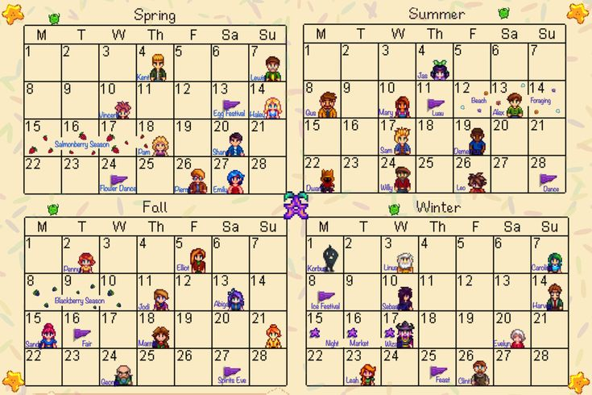

Események 
Tavaszi események
- Tojásfesztivál
- Tojásvadászat a falusiakkal
- Pierre különleges tárgyakat árul
- Virágtánc
Nyári események
- Luau
- Főzőedénybe lehet hozzájárulni (a hozzávaló minősége számít)
- Világító medúzák tánca
- Medúzanézés az óceánparton
Őszi események
- Vásár a főtéren
- Játékos stand (kiállítható tárgyak)
- Mini-játékok, Csillagjegy-tokenek
- Lelkek Éjszakája
- Halloween-hangulat, labirintus (jutalom: arany tök, recept)
Téli események
- Jégfesztivál
- A Téli Csillag Ünnepe
- Titkos ajándékozás egy falusi karakterrel
- Speciális beszélgetések, ajándékok
- Születésnapok
- Ajándékozáskor extra bónusz (sokkal több barátságpont)
- Random események
- Meteor, boszorkány, tündér stb. éjszaka történhetnek
- Évfordulók, házasságkötés, gyermek születése
- Játékos fejlődésétől függően aktiválódnak